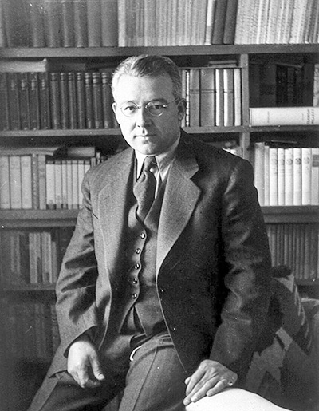

Sabahattin Ali
"İyilik demek kimseye kötülüğü dokunmamak değil, kötülük yapacak cevheri içinde taşımamak demektir."
Sabahattin Ali'nin yaşamı ve eserleri üzerine hazırlanmış bu özel sayfaya hoş geldiniz.
Hayatı ve Kariyeri
Sabahattin Ali, 25 Şubat 1907'de Gümülcine'de doğdu. İlk ve orta öğrenimini çeşitli şehirlerde tamamladıktan sonra İstanbul Öğretmen Okulu'ndan mezun oldu. Almanya'ya giderek yüksek öğrenimini tamamladı. Türkiye'ye döndükten sonra öğretmenlik ve gazetecilik yaptı. Edebiyat hayatına şiirle başlayan Sabahattin Ali, sonrasında hikâye ve roman türünde eserler verdi. Toplumcu gerçekçi anlayışı benimseyerek Anadolu insanının sıkıntılarını ve yoksulluğunu eserlerine taşıdı.
"Kuyucaklı Yusuf", "İçimizdeki Şeytan" ve "Kürk Mantolu Madonna" gibi romanlarında aşk, yalnızlık, yabancılaşma ve bireyin toplumla çatışması gibi temalara derinlikli bir şekilde yer vermiştir. Aynı zamanda taşradaki insanların sosyal adaletsizliklere karşı verdikleri mücadeleyi çarpıcı bir biçimde işler.
Sabahattin Ali, döneminin siyasi atmosferinde yaşadığı sıkıntılar nedeniyle defalarca tutuklandı. Gazetecilik hayatında da sansüre uğradı. 1948 yılında Bulgaristan sınırına kaçmaya çalışırken esrarengiz bir şekilde öldürüldü. Ölümü, Türkiye'nin yakın tarihindeki önemli faili meçhul olaylardan biri olarak anılmaktadır.
Eserleri
- 🖋️ Kuyucaklı Yusuf (1937)
- 🖋️ İçimizdeki Şeytan (1940)
- 🖋️ Kürk Mantolu Madonna (1943)
- 🖋️ Değirmen (1935, hikâye)
- 🖋️ Kağnı (1936, hikâye)
- 🖋️ Ses (1937, hikâye)
- 🖋️ Yeni Dünya (1943, hikâye)
- 🖋️ Sırça Köşk (1947, hikâye)
- 🖋️ Dağlar ve Rüzgar (1934, şiir)